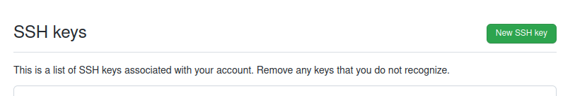

<!DOCTYPE html>


<html >

  <head>
    <meta charset="utf-8" />
    <meta name="viewport" content="width=device-width, initial-scale=1.0" /><meta name="generator" content="Docutils 0.17.1: http://docutils.sourceforge.net/" />

    <title>Lecture Notes 6 &#8212; Python lecture notes</title>
  
  
  
  <script data-cfasync="false">
    document.documentElement.dataset.mode = localStorage.getItem("mode") || "";
    document.documentElement.dataset.theme = localStorage.getItem("theme") || "light";
  </script>
  
  <!-- Loaded before other Sphinx assets -->
  <link href="_static/styles/theme.css?digest=12da95d707ffb74b382d" rel="stylesheet" />
<link href="_static/styles/bootstrap.css?digest=12da95d707ffb74b382d" rel="stylesheet" />
<link href="_static/styles/pydata-sphinx-theme.css?digest=12da95d707ffb74b382d" rel="stylesheet" />

  
  <link href="_static/vendor/fontawesome/6.1.2/css/all.min.css?digest=12da95d707ffb74b382d" rel="stylesheet" />
  <link rel="preload" as="font" type="font/woff2" crossorigin href="_static/vendor/fontawesome/6.1.2/webfonts/fa-solid-900.woff2" />
<link rel="preload" as="font" type="font/woff2" crossorigin href="_static/vendor/fontawesome/6.1.2/webfonts/fa-brands-400.woff2" />
<link rel="preload" as="font" type="font/woff2" crossorigin href="_static/vendor/fontawesome/6.1.2/webfonts/fa-regular-400.woff2" />

    <link rel="stylesheet" type="text/css" href="_static/pygments.css" />
    <link rel="stylesheet" href="_static/styles/sphinx-book-theme.css?digest=14f4ca6b54d191a8c7657f6c759bf11a5fb86285" type="text/css" />
    <link rel="stylesheet" type="text/css" href="_static/togglebutton.css" />
    <link rel="stylesheet" type="text/css" href="_static/copybutton.css" />
    <link rel="stylesheet" type="text/css" href="_static/mystnb.4510f1fc1dee50b3e5859aac5469c37c29e427902b24a333a5f9fcb2f0b3ac41.css" />
    <link rel="stylesheet" type="text/css" href="_static/sphinx-thebe.css" />
    <link rel="stylesheet" type="text/css" href="_static/design-style.4045f2051d55cab465a707391d5b2007.min.css" />
  
  <!-- Pre-loaded scripts that we'll load fully later -->
  <link rel="preload" as="script" href="_static/scripts/bootstrap.js?digest=12da95d707ffb74b382d" />
<link rel="preload" as="script" href="_static/scripts/pydata-sphinx-theme.js?digest=12da95d707ffb74b382d" />

    <script data-url_root="./" id="documentation_options" src="_static/documentation_options.js"></script>
    <script src="_static/jquery.js"></script>
    <script src="_static/underscore.js"></script>
    <script src="_static/doctools.js"></script>
    <script src="_static/clipboard.min.js"></script>
    <script src="_static/copybutton.js"></script>
    <script src="_static/scripts/sphinx-book-theme.js?digest=5a5c038af52cf7bc1a1ec88eea08e6366ee68824"></script>
    <script>let toggleHintShow = 'Click to show';</script>
    <script>let toggleHintHide = 'Click to hide';</script>
    <script>let toggleOpenOnPrint = 'true';</script>
    <script src="_static/togglebutton.js"></script>
    <script>var togglebuttonSelector = '.toggle, .admonition.dropdown';</script>
    <script src="_static/design-tabs.js"></script>
    <script>const THEBE_JS_URL = "https://unpkg.com/thebe@0.8.2/lib/index.js"
const thebe_selector = ".thebe,.cell"
const thebe_selector_input = "pre"
const thebe_selector_output = ".output, .cell_output"
</script>
    <script async="async" src="_static/sphinx-thebe.js"></script>
    <script>DOCUMENTATION_OPTIONS.pagename = 'Lecture Notes 6';</script>
    <link rel="index" title="Index" href="genindex.html" />
    <link rel="search" title="Search" href="search.html" />
    <link rel="next" title="Lecture Notes 7" href="Lecture%20Notes%207.html" />
    <link rel="prev" title="Lecture Notes 5" href="Lecture%20Notes%205.html" />
  <meta name="viewport" content="width=device-width, initial-scale=1"/>
  <meta name="docsearch:language" content="None"/>
  </head>
  
  
  <body data-bs-spy="scroll" data-bs-target=".bd-toc-nav" data-offset="180" data-bs-root-margin="0px 0px -60%" data-default-mode="">

  
  
  <a class="skip-link" href="#main-content">Skip to main content</a>
  
  <input type="checkbox"
          class="sidebar-toggle"
          name="__primary"
          id="__primary"/>
  <label class="overlay overlay-primary" for="__primary"></label>
  
  <input type="checkbox"
          class="sidebar-toggle"
          name="__secondary"
          id="__secondary"/>
  <label class="overlay overlay-secondary" for="__secondary"></label>
  
  <div class="search-button__wrapper">
    <div class="search-button__overlay"></div>
    <div class="search-button__search-container">
<form class="bd-search d-flex align-items-center"
      action="search.html"
      method="get">
  <i class="fa-solid fa-magnifying-glass"></i>
  <input type="search"
         class="form-control"
         name="q"
         id="search-input"
         placeholder="Search this book..."
         aria-label="Search this book..."
         autocomplete="off"
         autocorrect="off"
         autocapitalize="off"
         spellcheck="false"/>
  <span class="search-button__kbd-shortcut"><kbd class="kbd-shortcut__modifier">Ctrl</kbd>+<kbd>K</kbd></span>
</form></div>
  </div>
  
    <nav class="bd-header navbar navbar-expand-lg bd-navbar">
    </nav>
  
  <div class="bd-container">
    <div class="bd-container__inner bd-page-width">
      
      <div class="bd-sidebar-primary bd-sidebar">
        

  
  <div class="sidebar-header-items sidebar-primary__section">
    
    
    
    
  </div>
  
    <div class="sidebar-primary-items__start sidebar-primary__section">
        <div class="sidebar-primary-item">
  

<a class="navbar-brand logo" href="intro.html">
  
  
  
  
    
    
      
    
    
    
    <script>document.write(``);</script>
  
  
</a></div>
        <div class="sidebar-primary-item"><nav class="bd-links" id="bd-docs-nav" aria-label="Main">
    <div class="bd-toc-item navbar-nav active">
        
        <ul class="nav bd-sidenav bd-sidenav__home-link">
            <li class="toctree-l1">
                <a class="reference internal" href="intro.html">
                    Lecture notes
                </a>
            </li>
        </ul>
        <ul class="current nav bd-sidenav">
<li class="toctree-l1"><a class="reference internal" href="Lecture%20Notes%201.html">Lecture notes 1</a></li>
<li class="toctree-l1"><a class="reference internal" href="Lecture%20Notes%202.html">Lecture notes 2</a></li>
<li class="toctree-l1"><a class="reference internal" href="cmdlab.html">Lab:Command-line exercise</a></li>
<li class="toctree-l1"><a class="reference internal" href="solutions.html">Lab: Command-line solutions</a></li>
<li class="toctree-l1"><a class="reference internal" href="Lecture%20Notes%203.html">Lecture notes 3</a></li>
<li class="toctree-l1"><a class="reference internal" href="Lecture%20Notes%204.html">Lecture notes 4</a></li>
<li class="toctree-l1"><a class="reference internal" href="Lecture%20Notes%205.html">Lecture Notes 5</a></li>
<li class="toctree-l1 current active"><a class="current reference internal" href="#">Lecture Notes 6</a></li>
<li class="toctree-l1"><a class="reference internal" href="Lecture%20Notes%207.html">Lecture Notes 7</a></li>
<li class="toctree-l1"><a class="reference internal" href="Lecture%20Notes%208.html">Lecture Notes 8</a></li>
<li class="toctree-l1"><a class="reference internal" href="Lecture%20Notes%209.html">Lecture Notes 9</a></li>
<li class="toctree-l1"><a class="reference internal" href="Lecture%20Notes%2010.html">Lecture Notes 10</a></li>
<li class="toctree-l1"><a class="reference internal" href="Lecture%20Notes%2011.html">Lecture Notes 11</a></li>
<li class="toctree-l1"><a class="reference internal" href="Lecture%20Notes%2012.html">Lecture Notes 12</a></li>
<li class="toctree-l1"><a class="reference internal" href="Lecture%20Notes%2013.html">Lecture Notes 13</a></li>
<li class="toctree-l1"><a class="reference internal" href="Lecture%20Notes%2014.html">Lecture Notes 14</a></li>
<li class="toctree-l1"><a class="reference internal" href="Lecture%20Notes%2015.html">Lecture Notes 15</a></li>
<li class="toctree-l1"><a class="reference internal" href="Lecture%20Notes%2016.html">Lecture Notes 16</a></li>
</ul>

    </div>
</nav></div>
    </div>
  
  
  <div class="sidebar-primary-items__end sidebar-primary__section">
  </div>
  
  <div id="rtd-footer-container"></div>


      </div>
      
      <main id="main-content" class="bd-main">
        
        

<div class="sbt-scroll-pixel-helper"></div>

          <div class="bd-content">
            <div class="bd-article-container">
              
              <div class="bd-header-article">
<div class="header-article-items header-article__inner">
  
    <div class="header-article-items__start">
      
        <div class="header-article-item"><label class="sidebar-toggle primary-toggle btn btn-sm" for="__primary" title="Toggle primary sidebar" data-bs-placement="bottom" data-bs-toggle="tooltip">
  <span class="fa-solid fa-bars"></span>
</label></div>
      
    </div>
  
  
    <div class="header-article-items__end">
      
        <div class="header-article-item">

<div class="article-header-buttons">


<div class="dropdown dropdown-source-buttons">
  <button class="btn dropdown-toggle" type="button" data-bs-toggle="dropdown" aria-expanded="false" aria-label="Source repositories">
    <i class="fab fa-github"></i>
  </button>
  <ul class="dropdown-menu">
      
      
      
      <li><a href="https://github.com/executablebooks/jupyter-book" target="_blank"
   class="btn btn-sm btn-source-repository-button dropdown-item"
   title="Source repository"
   data-bs-placement="left" data-bs-toggle="tooltip"
>
  

<span class="btn__icon-container">
  <i class="fab fa-github"></i>
  </span>
<span class="btn__text-container">Repository</span>
</a>
</li>
      
      
      
      
      <li><a href="https://github.com/executablebooks/jupyter-book/issues/new?title=Issue%20on%20page%20%2FLecture Notes 6.html&body=Your%20issue%20content%20here." target="_blank"
   class="btn btn-sm btn-source-issues-button dropdown-item"
   title="Open an issue"
   data-bs-placement="left" data-bs-toggle="tooltip"
>
  

<span class="btn__icon-container">
  <i class="fas fa-lightbulb"></i>
  </span>
<span class="btn__text-container">Open issue</span>
</a>
</li>
      
  </ul>
</div>


<div class="dropdown dropdown-download-buttons">
  <button class="btn dropdown-toggle" type="button" data-bs-toggle="dropdown" aria-expanded="false" aria-label="Download this page">
    <i class="fas fa-download"></i>
  </button>
  <ul class="dropdown-menu">
      
      
      
      <li><a href="_sources/Lecture Notes 6.ipynb" target="_blank"
   class="btn btn-sm btn-download-source-button dropdown-item"
   title="Download source file"
   data-bs-placement="left" data-bs-toggle="tooltip"
>
  

<span class="btn__icon-container">
  <i class="fas fa-file"></i>
  </span>
<span class="btn__text-container">.ipynb</span>
</a>
</li>
      
      
      
      
      <li>
<button onclick="window.print()"
  class="btn btn-sm btn-download-pdf-button dropdown-item"
  title="Print to PDF"
  data-bs-placement="left" data-bs-toggle="tooltip"
>
  

<span class="btn__icon-container">
  <i class="fas fa-file-pdf"></i>
  </span>
<span class="btn__text-container">.pdf</span>
</button>
</li>
      
  </ul>
</div>


<button onclick="toggleFullScreen()"
  class="btn btn-sm btn-fullscreen-button"
  title="Fullscreen mode"
  data-bs-placement="bottom" data-bs-toggle="tooltip"
>
  

<span class="btn__icon-container">
  <i class="fas fa-expand"></i>
  </span>

</button>


<script>
document.write(`
  <button class="theme-switch-button btn btn-sm btn-outline-primary navbar-btn rounded-circle" title="light/dark" aria-label="light/dark" data-bs-placement="bottom" data-bs-toggle="tooltip">
    <span class="theme-switch" data-mode="light"><i class="fa-solid fa-sun"></i></span>
    <span class="theme-switch" data-mode="dark"><i class="fa-solid fa-moon"></i></span>
    <span class="theme-switch" data-mode="auto"><i class="fa-solid fa-circle-half-stroke"></i></span>
  </button>
`);
</script>

<script>
document.write(`
  <button class="btn btn-sm navbar-btn search-button search-button__button" title="Search" aria-label="Search" data-bs-placement="bottom" data-bs-toggle="tooltip">
    <i class="fa-solid fa-magnifying-glass"></i>
  </button>
`);
</script>
<label class="sidebar-toggle secondary-toggle btn btn-sm" for="__secondary"title="Toggle secondary sidebar" data-bs-placement="bottom" data-bs-toggle="tooltip">
    <span class="fa-solid fa-list"></span>
</label>
</div></div>
      
    </div>
  
</div>
</div>
              
              

<div id="jb-print-docs-body" class="onlyprint">
    <h1>Lecture Notes 6</h1>
    <!-- Table of contents -->
    <div id="print-main-content">
        <div id="jb-print-toc">
            
            <div>
                <h2> Contents </h2>
            </div>
            <nav aria-label="Page">
                <ul class="visible nav section-nav flex-column">
<li class="toc-h2 nav-item toc-entry"><a class="reference internal nav-link" href="#ssh-keys">ssh keys</a><ul class="nav section-nav flex-column">
<li class="toc-h3 nav-item toc-entry"><a class="reference internal nav-link" href="#setting-up-your-github-account">Setting up your github account</a></li>
<li class="toc-h3 nav-item toc-entry"><a class="reference internal nav-link" href="#cloning-the-repository">Cloning the repository</a></li>
<li class="toc-h3 nav-item toc-entry"><a class="reference internal nav-link" href="#create-an-initial-file-booklist-txt">Create an initial file <code class="docutils literal notranslate"><span class="pre">booklist.txt</span></code></a></li>
<li class="toc-h3 nav-item toc-entry"><a class="reference internal nav-link" href="#what-is-the-status-according-to-git">What is the status according to git?</a></li>
<li class="toc-h3 nav-item toc-entry"><a class="reference internal nav-link" href="#tell-git-to-track-booklist-txt">Tell git to track <code class="docutils literal notranslate"><span class="pre">booklist.txt</span></code></a></li>
<li class="toc-h3 nav-item toc-entry"><a class="reference internal nav-link" href="#commit-the-new-file-to-history">Commit the new file to history</a></li>
<li class="toc-h3 nav-item toc-entry"><a class="reference internal nav-link" href="#get-information-of-the-remote-repositories">Get information of the remote repositories</a></li>
<li class="toc-h3 nav-item toc-entry"><a class="reference internal nav-link" href="#backup-the-new-changes-to-github">Backup the new changes to Github</a></li>
<li class="toc-h3 nav-item toc-entry"><a class="reference internal nav-link" href="#add-a-second-book">Add a second book</a></li>
<li class="toc-h3 nav-item toc-entry"><a class="reference internal nav-link" href="#backup-to-remote-repository">Backup to remote repository</a></li>
<li class="toc-h3 nav-item toc-entry"><a class="reference internal nav-link" href="#include-new-changes-in-the-remote">Include new changes in the remote</a></li>
<li class="toc-h3 nav-item toc-entry"><a class="reference internal nav-link" href="#fetch-merge-vs-pull">Fetch/merge vs pull</a></li>
</ul>
</li>
</ul>
            </nav>
        </div>
    </div>
</div>

              
                
<div id="searchbox"></div>
                <article class="bd-article" role="main">
                  
  <section class="tex2jax_ignore mathjax_ignore" id="lecture-notes-6">
<h1>Lecture Notes 6<a class="headerlink" href="#lecture-notes-6" title="Permalink to this headline">#</a></h1>
<section id="ssh-keys">
<h2>ssh keys<a class="headerlink" href="#ssh-keys" title="Permalink to this headline">#</a></h2>
<ul class="simple">
<li><p>Generate a new pair of sshkeys with</p></li>
</ul>
<div class="highlight-default notranslate"><div class="highlight"><pre><span></span>$ ssh-keygen
Generating public/private rsa key pair.
Enter file in which to save the key (/home/python-lll/.ssh/id_rsa): 
Created directory &#39;/home/python-lll/.ssh&#39;.
Enter passphrase (empty for no passphrase): 
Enter same passphrase again: 
Your identification has been saved in /home/python-lll/.ssh/id_rsa
Your public key has been saved in /home/python-lll/.ssh/id_rsa.pub
The key fingerprint is:
SHA256:AkLdasm36JyaLixeOrT0maAAy5wvkF4Hf6esGsLNGtw python-lll@bat
The key&#39;s randomart image is:
+---[RSA 3072]----+
|  .. .           |
| .  . .          |
|  ...o           |
|.  o=..          |
|+o..oo..S        |
|BB+..o.o .       |
|O=*E+.o o        |
|+***=  o         |
|o**o...          |
+----[SHA256]-----+
</pre></div>
</div>
<p>}</p>
<ul class="simple">
<li><p>The hidden <code class="docutils literal notranslate"><span class="pre">.ssh</span></code> folder is where the keys are stored:</p></li>
</ul>
<div class="highlight-default notranslate"><div class="highlight"><pre><span></span>$ ls .ssh
id_rsa  id_rsa.pub
$ more .ssh/id_rsa.pub 
ssh-rsa AAAAB3NzaC1yc2EAAAADAQABAAABgQDv1DgQURdmseEd7QKx1+vh6KZoN6E/d/VVP5x5/4OL
r0xj3w3lMFMvTKgH43vZ+NNTidT8TcLrJLMwq/tLUmxnLd/k13kK12qdBU/1ovZnwqO0ELAiz08kGBVy
Yw5POCPJVi5y5gfoU4bcmptsrNmWcUk/IFj6VzG+kh5YptqwPqpOYAnZ6ECK9yfmlurSExdSvotiPQAS
E1tH2ZnQuT443K+EZhOE2kMuNhhk0bVReIF83AtMfIrhyCyp4nieJmdfIxo28zfizqGOy4MnIfeRU43W
HFHQDvV00GhCcUIbF6nbgxc/8BiDX8GvqJnZLK4uKVMZz2w56Z8Lm0VXvyhI1yC8rWqNqXdGyTEH+ut3
jpwJ4slamkCFsUE2fJU0m2LrXBCYn9zLXNZaUrJjGno+M/TQi1JsvFgoTvCzo7odEF20xAXaazFs2NKY
KL2bbNAJUL7SyamS8SzU4VxoIDss105Zeu1ZmddQRRVVTt45uryS/F1SsA/bfDcLrQLN+rs= python-
lll@bat

</pre></div>
</div>
<section id="setting-up-your-github-account">
<h3>Setting up your github account<a class="headerlink" href="#setting-up-your-github-account" title="Permalink to this headline">#</a></h3>
<p>From profile menu select Settings</p>
<p></p>
<p>In the sidebar select <code class="docutils literal notranslate"><span class="pre">SSH</span> <span class="pre">and</span> <span class="pre">GPG</span> <span class="pre">Keys</span></code></p>
<p></p>
<p>Add new key</p>
<p></p>
<p>Copy-paste the public key (content of <code class="docutils literal notranslate"><span class="pre">id_rsa.pub</span></code>) to the <code class="docutils literal notranslate"><span class="pre">Key</span></code> field</p>
<p></p>
</section>
<section id="cloning-the-repository">
<h3>Cloning the repository<a class="headerlink" href="#cloning-the-repository" title="Permalink to this headline">#</a></h3>
<p>Now we can clone the repository from KTH Github</p>
<div class="highlight-default notranslate"><div class="highlight"><pre><span></span>$ git clone git@gits-15.sys.kth.se:BB1000/git-2023-04-19.git
Cloning into &#39;git-2023-04-19&#39;...

The authenticity of host &#39;gits-15.sys.kth.se (2001:6b0:1:1300:250:56ff:fe01:109)&#39; can&#39;t be established.
ECDSA key fingerprint is SHA256:OmuyB64vnycQufBPs7zDXyHYpCi89jTrHru802Q+4/E.
This key is not known by any other names
Are you sure you want to continue connecting (yes/no/[fingerprint])? yes
Warning: Permanently added &#39;gits-15.sys.kth.se&#39; (ECDSA) to the list of known hosts.
warning: You appear to have cloned an empty repository.
</pre></div>
</div>
<p>that creates a new folder with the same name</p>
<div class="highlight-default notranslate"><div class="highlight"><pre><span></span>$ cd git-2023-04-19
</pre></div>
</div>
</section>
<section id="create-an-initial-file-booklist-txt">
<h3>Create an initial file <code class="docutils literal notranslate"><span class="pre">booklist.txt</span></code><a class="headerlink" href="#create-an-initial-file-booklist-txt" title="Permalink to this headline">#</a></h3>
<div class="highlight-default notranslate"><div class="highlight"><pre><span></span>$ ls
booklist.txt
$ cat booklist.txt 
Harry Potter, J.K. Rowling
</pre></div>
</div>
</section>
<section id="what-is-the-status-according-to-git">
<h3>What is the status according to git?<a class="headerlink" href="#what-is-the-status-according-to-git" title="Permalink to this headline">#</a></h3>
<div class="highlight-default notranslate"><div class="highlight"><pre><span></span>
$ git status
On branch main

No commits yet

Untracked files:
  (use &quot;git add &lt;file&gt;...&quot; to include in what will be committed)
	booklist.txt

nothing added to commit but untracked files present (use &quot;git add&quot; to track)
</pre></div>
</div>
</section>
<section id="tell-git-to-track-booklist-txt">
<h3>Tell git to track <code class="docutils literal notranslate"><span class="pre">booklist.txt</span></code><a class="headerlink" href="#tell-git-to-track-booklist-txt" title="Permalink to this headline">#</a></h3>
<div class="highlight-default notranslate"><div class="highlight"><pre><span></span>$ git add booklist.txt 
$ git status
On branch main

No commits yet

Changes to be committed:
  (use &quot;git rm --cached &lt;file&gt;...&quot; to unstage)
	new file:   booklist.txt
</pre></div>
</div>
</section>
<section id="commit-the-new-file-to-history">
<h3>Commit the new file to history<a class="headerlink" href="#commit-the-new-file-to-history" title="Permalink to this headline">#</a></h3>
<div class="highlight-default notranslate"><div class="highlight"><pre><span></span>$ git commit -m &quot;Starting a booklist&quot;
[main (root-commit) 803036a] Starting a booklist
 1 file changed, 1 insertion(+)
 create mode 100644 booklist.txt
</pre></div>
</div>
<pre>
$ git log
commit 803036a8d643fc482189a28542bac64917130574 (HEAD -> main)
Author: Olav Vahtras <vahtras@kth.se>
Date:   Tue Apr 18 16:26:26 2023 +0200

    Starting a booklist
    
</pre></section>
<section id="get-information-of-the-remote-repositories">
<h3>Get information of the remote repositories<a class="headerlink" href="#get-information-of-the-remote-repositories" title="Permalink to this headline">#</a></h3>
<div class="highlight-default notranslate"><div class="highlight"><pre><span></span>$ git remote
origin
$ git remote -v
origin	git@gits-15.sys.kth.se:BB1000/git-2023-04-19.git (fetch)
origin	git@gits-15.sys.kth.se:BB1000/git-2023-04-19.git (push)
</pre></div>
</div>
</section>
<section id="backup-the-new-changes-to-github">
<h3>Backup the new changes to Github<a class="headerlink" href="#backup-the-new-changes-to-github" title="Permalink to this headline">#</a></h3>
<p><code class="docutils literal notranslate"><span class="pre">git</span> <span class="pre">push</span></code> takes two arguments, the name associated with the repository and the branch name involved. Here the changes in the local branch <code class="docutils literal notranslate"><span class="pre">main</span></code> will be copied to the remote’s branch with the same name</p>
<div class="highlight-default notranslate"><div class="highlight"><pre><span></span>$ git push  origin main
Enumerating objects: 3, done.

Counting objects: 100% (3/3), done.
Writing objects: 100% (3/3), 247 bytes | 247.00 KiB/s, done.
Total 3 (delta 0), reused 0 (delta 0), pack-reused 0
To gits-15.sys.kth.se:BB1000/git-2023-04-19.git
 * [new branch]      main -&gt; main
</pre></div>
</div>
<p>Note that there is a new branch <code class="docutils literal notranslate"><span class="pre">origin/main</span></code> associated with the remote repository (KTH Github)</p>
<pre>
$ git log
commit 803036a8d643fc482189a28542bac64917130574 <span style="background-color: yellow;">(HEAD -> main, origin/main)</span>
Author: Olav Vahtras <vahtras@kth.se>
Date:   Tue Apr 18 16:26:26 2023 +0200

    Starting a booklist
</pre></section>
<section id="add-a-second-book">
<h3>Add a second book<a class="headerlink" href="#add-a-second-book" title="Permalink to this headline">#</a></h3>
<p>Assuming work on another computer: Editing the file <code class="docutils literal notranslate"><span class="pre">booklist.txt</span></code></p>
<div class="highlight-default notranslate"><div class="highlight"><pre><span></span>
$ git add booklist.txt 

$ git commit -m &#39;Add second book&#39;
[main 1df3614] Add second book
 1 file changed, 1 insertion(+)
</pre></div>
</div>
</section>
<section id="backup-to-remote-repository">
<h3>Backup to remote repository<a class="headerlink" href="#backup-to-remote-repository" title="Permalink to this headline">#</a></h3>
<p>When there is only one defined remote and one branch <code class="docutils literal notranslate"><span class="pre">git</span> <span class="pre">push</span></code> without arguments will try to use those</p>
<div class="highlight-default notranslate"><div class="highlight"><pre><span></span>$ git push
Enumerating objects: 5, done.
Counting objects: 100% (5/5), done.
Delta compression using up to 12 threads
Compressing objects: 100% (2/2), done.
Writing objects: 100% (3/3), 299 bytes | 299.00 KiB/s, done.
Total 3 (delta 0), reused 0 (delta 0), pack-reused 0
To gits-15.sys.kth.se:BB1000/git-2023-04-19
   803036a..1df3614  main -&gt; main

Your branch is up to date with &#39;origin/main&#39;.

nothing to commit, working tree clean

</pre></div>
</div>
<pre>
$ git log --oneline --all
1df3614 <span style="background-color: yellow;">(HEAD -> main, origin/main, origin/HEAD) Add second book</span>
803036a Starting a booklist
</pre></section>
<section id="include-new-changes-in-the-remote">
<h3>Include new changes in the remote<a class="headerlink" href="#include-new-changes-in-the-remote" title="Permalink to this headline">#</a></h3>
<p>E.g. another collaborator has contributed or you have saved work from another computer</p>
<ul class="simple">
<li><p>On the first computer the <code class="docutils literal notranslate"><span class="pre">git</span> <span class="pre">log</span></code> shows old information - the local repository has not been synchronized with latest changes on Github</p></li>
</ul>
<pre>
$ git log --oneline --all
803036a <span style="background-color: yellow;">(HEAD -> main, origin/main) Starting a booklist</span>
(bb1000) python-lll@bat:~/git-2023-04-19
</pre>
<ul class="simple">
<li><p>Use <code class="docutils literal notranslate"><span class="pre">git</span> <span class="pre">fetch</span></code> to update local computer with knowledge about remote state</p></li>
</ul>
<div class="highlight-default notranslate"><div class="highlight"><pre><span></span>$ git fetch origin
remote: Enumerating objects: 5, done.
remote: Counting objects: 100% (5/5), done.
remote: Compressing objects: 100% (2/2), done.
remote: Total 3 (delta 0), reused 3 (delta 0), pack-reused 0
Unpacking objects: 100% (3/3), 279 bytes | 279.00 KiB/s, done.
From gits-15.sys.kth.se:BB1000/git-2023-04-19
   803036a..1df3614  main       -&gt; origin/main
</pre></div>
</div>
<pre>
$ git log --oneline --all
1df3614 <span style="background-color: yellow;">(origin/main) Add second book</span>
803036a <span style="background-color: yellow;">(HEAD -> main) Starting a booklist</span>
</pre>
<p>The remote branch can be merged just as with local development branches</p>
<pre>
$ git merge origin/main
Updating 803036a..1df3614
Fast-forward
 booklist.txt | 1 +
 1 file changed, 1 insertion(+)
</pre><pre>
$ git log --oneline --all
1df3614 <span style="background-color: yellow;">(HEAD -> main, origin/main) Add second book</span>
803036a Starting a booklist
</pre></section>
<section id="fetch-merge-vs-pull">
<h3>Fetch/merge vs pull<a class="headerlink" href="#fetch-merge-vs-pull" title="Permalink to this headline">#</a></h3>
<ul class="simple">
<li><p>remote branches are branches that reflect the state of remote repositories</p></li>
<li><p><code class="docutils literal notranslate"><span class="pre">git</span> <span class="pre">fetch</span></code> updates local information on the state of the remotes</p></li>
<li><p><code class="docutils literal notranslate"><span class="pre">git</span> <span class="pre">merge</span></code> can merge remote branches in the same way as local development branches</p></li>
<li><p><code class="docutils literal notranslate"><span class="pre">git</span> <span class="pre">pull</span></code> combines <code class="docutils literal notranslate"><span class="pre">git</span> <span class="pre">fetch</span></code> and <code class="docutils literal notranslate"><span class="pre">git</span> <span class="pre">merge</span></code> to a single command</p></li>
</ul>
<p>After a new change to <code class="docutils literal notranslate"><span class="pre">booklist.txt</span></code> in the web interface</p>
<div class="highlight-default notranslate"><div class="highlight"><pre><span></span>$ git pull
remote: Enumerating objects: 5, done.
remote: Counting objects: 100% (5/5), done.
remote: Compressing objects: 100% (2/2), done.
remote: Total 3 (delta 0), reused 0 (delta 0), pack-reused 0
Unpacking objects: 100% (3/3), 346 bytes | 173.00 KiB/s, done.
From gits-15.sys.kth.se:BB1000/git-2023-04-19
   1df3614..a167720  main       -&gt; origin/main
Updating 1df3614..a167720
Fast-forward
 booklist.txt | 1 +
 1 file changed, 1 insertion(+)
</pre></div>
</div>
<pre>
$ git log --oneline --all
a167720 (<span style="background-color: yellow;">HEAD -> main, origin/main) Add a third book</span>
1df3614 Add second book
803036a Starting a booklist
</pre></section>
</section>
</section>

    <script type="text/x-thebe-config">
    {
        requestKernel: true,
        binderOptions: {
            repo: "binder-examples/jupyter-stacks-datascience",
            ref: "master",
        },
        codeMirrorConfig: {
            theme: "abcdef",
            mode: "python"
        },
        kernelOptions: {
            name: "python3",
            path: "./."
        },
        predefinedOutput: true
    }
    </script>
    <script>kernelName = 'python3'</script>

                </article>
              

              
              
                <footer class="bd-footer-article">
                  <!-- Previous / next buttons -->
<div class="prev-next-area">
    <a class="left-prev"
       href="Lecture%20Notes%205.html"
       title="previous page">
      <i class="fa-solid fa-angle-left"></i>
      <div class="prev-next-info">
        <p class="prev-next-subtitle">previous</p>
        <p class="prev-next-title">Lecture Notes 5</p>
      </div>
    </a>
    <a class="right-next"
       href="Lecture%20Notes%207.html"
       title="next page">
      <div class="prev-next-info">
        <p class="prev-next-subtitle">next</p>
        <p class="prev-next-title">Lecture Notes 7</p>
      </div>
      <i class="fa-solid fa-angle-right"></i>
    </a>
</div>
                </footer>
              
            </div>
            
            
              
                <div class="bd-sidebar-secondary bd-toc"><div class="sidebar-secondary-items sidebar-secondary__inner">

  <div class="sidebar-secondary-item">
  <div class="page-toc tocsection onthispage">
    <i class="fa-solid fa-list"></i> Contents
  </div>
  <nav class="bd-toc-nav page-toc">
    <ul class="visible nav section-nav flex-column">
<li class="toc-h2 nav-item toc-entry"><a class="reference internal nav-link" href="#ssh-keys">ssh keys</a><ul class="nav section-nav flex-column">
<li class="toc-h3 nav-item toc-entry"><a class="reference internal nav-link" href="#setting-up-your-github-account">Setting up your github account</a></li>
<li class="toc-h3 nav-item toc-entry"><a class="reference internal nav-link" href="#cloning-the-repository">Cloning the repository</a></li>
<li class="toc-h3 nav-item toc-entry"><a class="reference internal nav-link" href="#create-an-initial-file-booklist-txt">Create an initial file <code class="docutils literal notranslate"><span class="pre">booklist.txt</span></code></a></li>
<li class="toc-h3 nav-item toc-entry"><a class="reference internal nav-link" href="#what-is-the-status-according-to-git">What is the status according to git?</a></li>
<li class="toc-h3 nav-item toc-entry"><a class="reference internal nav-link" href="#tell-git-to-track-booklist-txt">Tell git to track <code class="docutils literal notranslate"><span class="pre">booklist.txt</span></code></a></li>
<li class="toc-h3 nav-item toc-entry"><a class="reference internal nav-link" href="#commit-the-new-file-to-history">Commit the new file to history</a></li>
<li class="toc-h3 nav-item toc-entry"><a class="reference internal nav-link" href="#get-information-of-the-remote-repositories">Get information of the remote repositories</a></li>
<li class="toc-h3 nav-item toc-entry"><a class="reference internal nav-link" href="#backup-the-new-changes-to-github">Backup the new changes to Github</a></li>
<li class="toc-h3 nav-item toc-entry"><a class="reference internal nav-link" href="#add-a-second-book">Add a second book</a></li>
<li class="toc-h3 nav-item toc-entry"><a class="reference internal nav-link" href="#backup-to-remote-repository">Backup to remote repository</a></li>
<li class="toc-h3 nav-item toc-entry"><a class="reference internal nav-link" href="#include-new-changes-in-the-remote">Include new changes in the remote</a></li>
<li class="toc-h3 nav-item toc-entry"><a class="reference internal nav-link" href="#fetch-merge-vs-pull">Fetch/merge vs pull</a></li>
</ul>
</li>
</ul>
  </nav></div>

</div></div>
              
            
          </div>
          <footer class="bd-footer-content">
            <div class="bd-footer-content__inner">
<div class="bd-footer-content__inner container">
  
  <div class="footer-item">
    
<p class="component-author">
By Olav Vahtras
</p>

  </div>
  
  <div class="footer-item">
    
  <p class="copyright">
    
      © Copyright 2022.
      <br/>
    
  </p>

  </div>
  
  <div class="footer-item">
    
  </div>
  
  <div class="footer-item">
    
  </div>
  
</div></div>
          </footer>
        

      </main>
    </div>
  </div>
  
  <!-- Scripts loaded after <body> so the DOM is not blocked -->
  <script src="_static/scripts/bootstrap.js?digest=12da95d707ffb74b382d"></script>
<script src="_static/scripts/pydata-sphinx-theme.js?digest=12da95d707ffb74b382d"></script>

  <footer class="bd-footer">
  </footer>
  </body>
</html>